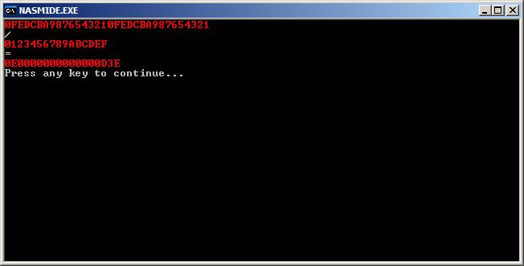

[Arithmétique] - [Affichage] - [Addition] - [Soustraction] - [Multiplication] - [Division]
.:: Rubrique
Arithmétique >> Division ::.
Comment on divise deux nombres?
J'ai 3 méthodes à vous
proposer:
- La méthode classique (scolaire):
en
gros c'est la méthode qu'on apprend à l'école. Je ne vais pas vous faire un
dessin, je suis sur que vous vous rappelez ces formidables heures de maths à
faire des divisions...
- Les avantages: le résultat trouvé est toujours
exacte et la taille des nombres qu'on utilise ne dépasse jamais celle
du dénominateur.
- Les inconvénients: c'est lent... très lent... il
y a plein de petits calculs différents à effectuer.
- La méthode bidouillage:
le but est de
faire la somme du dénominateur jusqu'à ce que cette somme soit
supérieure ou égale au nominateur. On trouve le résultat en comptant le nombre
de fois qu'on à fait cette somme - 1.
Un petit exemple:
n=7000 et
d=1234, on cherche q=n/d, normalement on devrait trouvé q=5 (on cherche la
valeur entière).
Et c'est parti !
- 0+1234 < n
- 1234+1234=2468 < n
- 2468+1234=3702 < n
- 3702+1234=4936 < n
- 4936+1234=6170 < n
- 6170+1234=7404 > n
donc
on s'arrête et on compte le nombre de fois qu'on à sommé d, ici 6 fois,
on retranche 1 et on trouve le bon résultat.
- Les avantages: le résultat trouvé est toujours
exacte et la taille des nombres qu'on utilise ne dépasse jamais celle
du nominateur.
- Les inconvénients: quand l'écart entre le
nominateur et le dénominateur et trop grand, le calcul devient très long...
trop long.
- La méthode "de Newton":
Le but est de
remarquer que diviser un nombre par un autre revient à le multiplier par
l'inverse de cet autre nombre.
Oui mais comment on calcule l'inverse d'un
nombre? et bien on utilise l'algorithme de Newton pardi! là on se dit qu'il
n'est pas mort pour rien.
Et voici ce que vous attendez tous... rapide et
ingénieux... j'ai nommé... l'algorithme de Newton !!!
c'est en fait une suite
récurente de la forme:
xn+1=2*xn-a*xn²
avec a qui est le nombre à inverser, quand n tend vers l'infini,
xn tend vers 1/a. Et donc une fois qu'on a une approximation
correcte de 1/a, il suffit de multiplier 1/a par le nominateur et c'est
gagné!
Mais ya juste un p'tit problème: il faut partir d'une valeur de
x0 qui ne soit pas trop éloigné du résultat pour rendre le calcul
rapide. On
réfléchit...
a<10a.longueur
1/a>10-a.longueur
donc
on peut poser x0 = 10-a.longueur.
- Les avantages: une approximation du résultat est
effectuée très rapidement.
- Les inconvénients: le résultat n'est
qu'approximatif.
 mais que
faire de tout ça ???!!!!
mais que
faire de tout ça ???!!!!
Et bien don't panic!, une bonne méthode est d'utiliser la méthode 3 en la
combinant avec la seconde méthode:
Pour une division du type b/a, on cherche
d'abord une valeur approchée de 1/a, on la multiplie par b puis on ajuste cette
valeur grâce à la méthode 2.
Ce qui devrait donner algorithmiquement pour b/a:
| |- * On pose x0 = 10-a.longueur;
|
| |- * On calcule xn jusqu'à ce qu'on trouve une
valeur de xn ~ xn-1; |
| |- * On multiplie xn par b et on sauve cette
valeur dans Q (le quotient); |
| |- * On pose R = Q*a; ce qui sera notre valeur initiale
pour la méthode 2 et qui devrait être relativement proche de b.
|
| -------Si R > b------------------------ |
-------Sinon--------------------------- |
| |- * On boucle tant que R > b |
|- * On boucle tant que R < b |
| ____|- * R reçoit R - a; |
____|- * R reçoit R + a; |
| ____|- * Q reçoit Q - 1; |
____|- * Q reçoit Q + 1; |
|
|- * Si R != a |
|
____|- * Q reçoit Q - 1; |
| |- * On affiche Q, qui est le résultat, si on veut :-)
|
On commence donc par calculer une approximation de 1/a par l'algorithme de
newton,
Comme nos nombres sont des entiers uniquement, on va calculer
1/a*(X+4) avec X une puissance de 16 car on travaille en hexa et +4 car on va
enregistrer le résultat obtenu dans un registre 16 bits. Passons au code:
Voilà maintenant qu'on a une approximation de 1/a il va falloir passer à la
phase 2 de l'algo:
"La 2ème méthode" (je ne lui est pas encore trouvé de nom,
si vous avez des idées de nom ou bien si cet algorithme en porte déjà un vous
pouvez me faire parvenir vos idées par mail, merci d'avance je sais que c'est
pas le moment mais y a t'il quelqu'un qui vendrait un narguilé avec 4 embouts et
pour moins de 100 euros? idem, repondez moi, ça parait pas mais c'est
sérieux.)
Bon, où en étais-je?
ah oui, la 2ème méthode...on va devoir
multiplier b par l'approximation de 1/a puis multiplier cette valeur par le
"vrai" a et enfin sauver ce nombre. Ce qui se traduit par de l'assembleur à peu
près comme ça:
C'est pas plus compliqué que ça :-)
Maintenant il ne vous reste plus qu'à
faire la boucle pour ajuster la valeur et c'est gagné.
je vais quand même
vous aider un peu, je vous ai fait la fonction qui permet de comparer deux
nombre (c'est un peu prise de tête  , alors merci qui?).
, alors merci qui?).
ça c'est cadeau:
Puis on teste le programme final:

C'est bon !!!
YYYYYYYEEEEEEEEEEEAAAAAAAAAAAAAAAAAAHHHHHHHHHHHHHHHHHHHHH !!!!!!!!!!!!!!!!!!!!!!!!!!!!!!!!!!!!!!!!!!!!!!!!
Et voilà c'est terminé pour la division et pour cette rubrique aussi... une
petite larme?
Si vous êtes courageux vous pouvez vous amuser à coder des
logarithmes & co pour le plaisir pour ça je vous conseille de jeter un coup
d'oeil sur les séries entières.
Bon code et bon hack/crack :-)
Voici les différentes rubriques:
Daemonium Albus,
blaizard@caramail.com